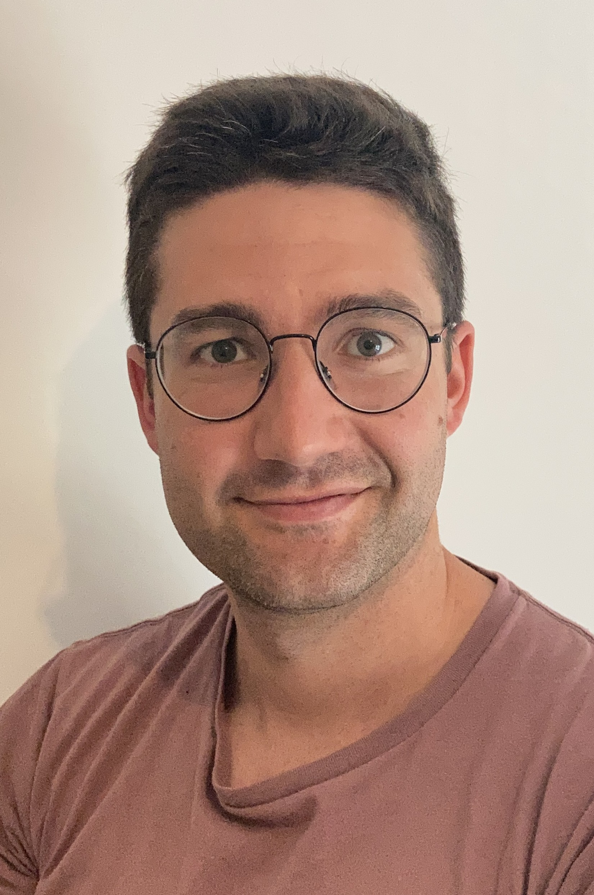
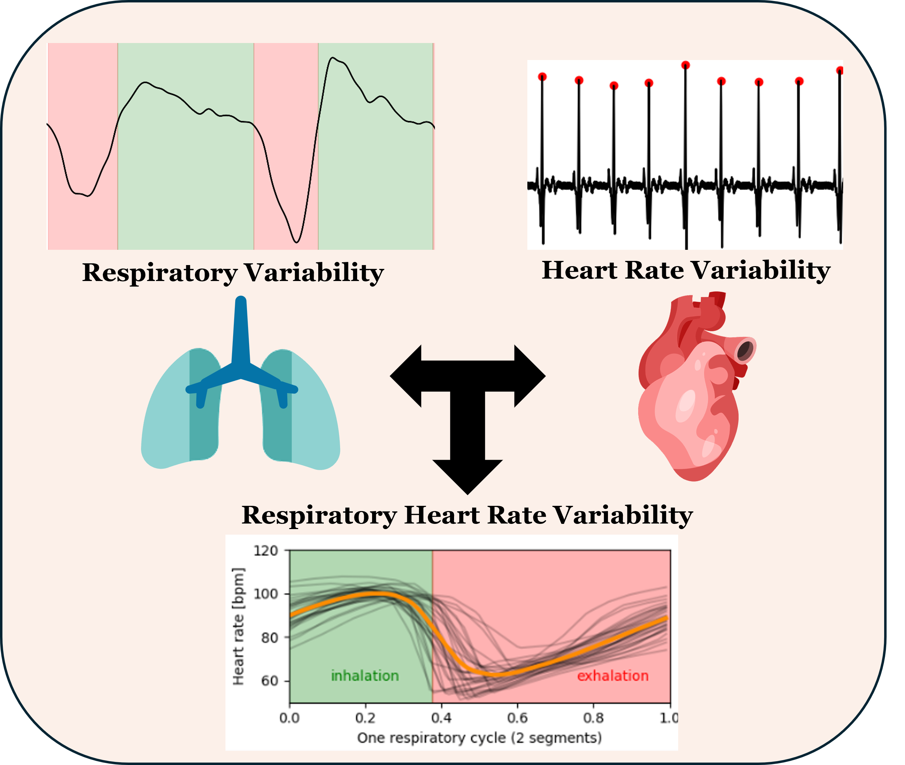
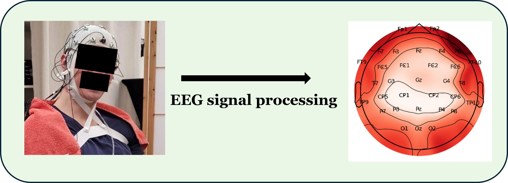
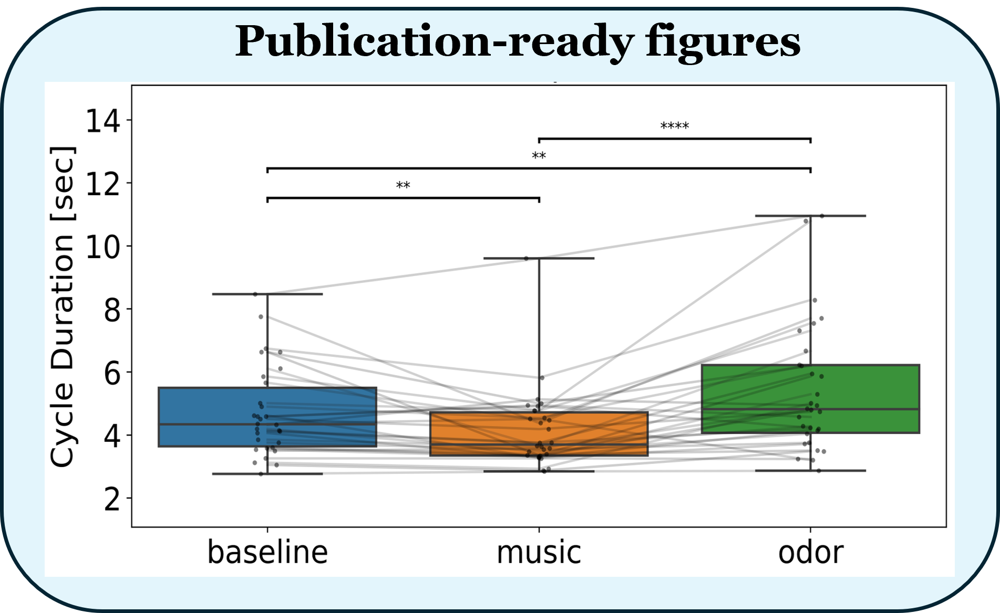

PhD en Neurosciences (2023), puis chercheur postdoctoral et ingénieur de recherche pour des laboratoires académiques et des CHU, spécialisé dans l'analyse du couplage entre rythmes du corps et rythmes du cerveau.
BioSignal Expertise accompagne les équipes de recherche publiques et privées dans la conception, l'analyse et la valorisation de leurs données expérimentales.

Analyse de signaux physiologiques (ECG, respiration) et statistiques appliquées : variabilité de la fréquence cardiaque (HRV) et respiratoire, couplage cardio‑respiratoire (RespHRV). Cette expertise s'appuie sur le co‑développement d'une toolbox Python dédiée, physio.

Prétraitement, extraction de marqueurs (puissance spectrale, couplage phase-amplitude, connectivité, ...) et analyses statistiques, intra- ou extra-crânien, humain ou animal, à l'éveil ou pendant le sommeil, couplage entre rythmes cérébraux et rythmes corporels.

Un accompagnement à toutes les étapes : conception méthodologique, conseil en analyse ou réalisation des analyses, statistiques avancées, réalisation de figures et aide à la rédaction des sections Méthodes et Résultats.
Chaque intervention est calibrée sur devis, selon la nature des données, le volume et le niveau d'implication souhaité.
Évaluation critique d'un projet de recherche, d'un protocole ou d'une stratégie d'analyse.
Accompagnement sur l'ensemble de la chaîne : des données brutes à l'interprétation.
Expertise spécialisée EEG, ECG, respiration, HRV et couplage cardio‑respiratoire.
Modèles linéaires, mixtes +/- généralisés, statistiques multivariées.
Intervention à toutes les étapes précédant la soumission d'un article.
Scripts et pipelines Python/R sur mesure pour les équipes de recherche.
« Apporter aux chercheurs une expertise scientifique indépendante afin d'améliorer la robustesse des analyses, la qualité méthodologique des travaux et la valorisation des résultats. »
Selon le niveau d'implication scientifique, une collaboration académique ou une co‑signature d'article peut être envisagée, lorsque celle‑ci est conforme aux usages de la recherche.